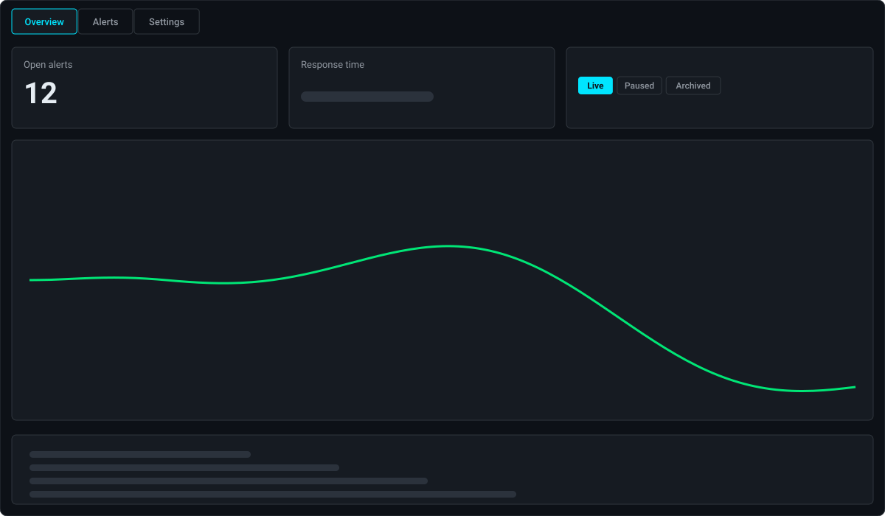
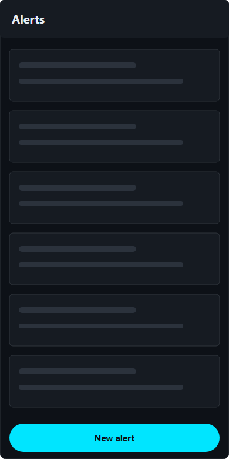

Esc, הכפתור × או לחיצה על הרקע הכהה סוגרים אותה. התמונה בשקופית לא זזה.

את הסימונים בתמונה הזאת כתב deck_draw.py. אפשר לפתוח אותה, לבחור סימון, למחוק אותו או לשנות את הכיתוב.
התמונה כאן היא קובץ png בצורת טלפון. הסימונים נשארים במקומם בכל גודל.
